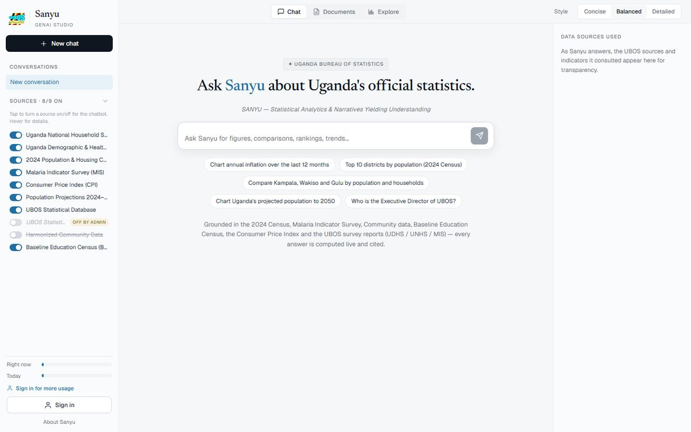

Sanyu
Uganda's AI assistant for official statistics.
Ask a question in plain language, in English or one of five Ugandan languages, and get the figure with its source, a live table or chart, or a drafted statistical brief. The language model decides what to retrieve; the statistical database decides what the value is. No figure reaches the reader unless a structured query returned it, and every figure carries its table, survey, period and geography.
- 5,100+indicators from six official sources
- 1,600+tables lifted from published reports, citeable by page
- 40 mscold start, down from 30 to 60 seconds
- 45golden-fact regression tests on every build
Node.js, SQLite, LLM tool calling, RAG, MCP endpoints, Python pipelines, Nginx and pm2. Built in-house at UBOS with Sunbird AI on the language side.
statistics.ubos.org/sanyu